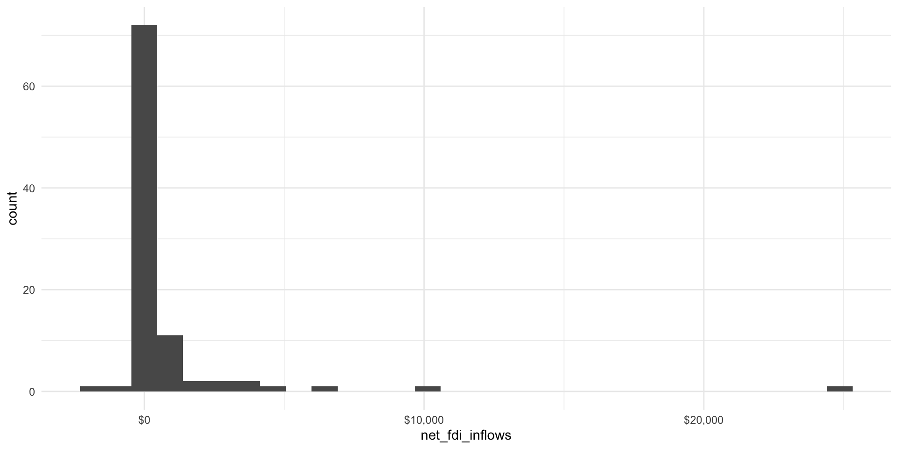
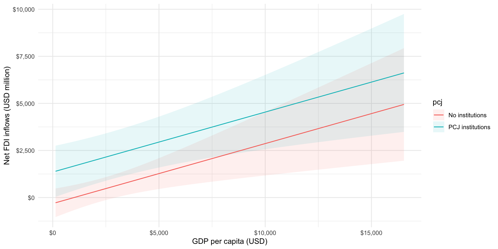

library(tidyverse)
library(broom)
library(modelsummary)
library(marginaleffects)
library(janitor)
library(ggdist)Model Specification
Warning
THIS IS A DRAFT.
Set up
The economic benefits of justice
Appel and Loyle (2012) find that post-conflict states that engage in post-conflict justice initiatives, including truth and reconciliation commissions, receive more foreign direct investment than states that do not establish these post-conflict justice institutions. This is a great paper and I encourage you to take a look at their argument in detail if this interests you.
Today we are going to explore this finding using their data. Let’s start by reading it in and cleaning it up a little.
ebj_raw <- rio::import("https://github.com/joshuaalley/cross-sectional-ols/raw/master/appel-loyle-2012/appelloyle_jprdata.dta")
glimpse(ebj_raw)Rows: 95
Columns: 25
$ testnewid_lag <dbl> 2880000, 2882880, 2850000, 3080000, 3083080, 13613…
$ ccode <dbl> 41, 41, 52, 70, 70, 90, 92, 92, 93, 93, 95, 101, 1…
$ id <dbl> 71, 71, 154, 102, 102, 67, 141, 141, 116, 116, 123…
$ damage <dbl> 0.000000, 12.855902, -2.787351, 0.000000, -8.94999…
$ victory_lag <dbl> 1, 1, 1, 0, 0, 0, 1, 0, 1, 0, 1, 1, 0, 1, 1, 1, 0,…
$ peace_agreement_lag <dbl> 0, 0, 0, 1, 0, 1, 0, 1, 0, 1, 0, 0, 0, 0, 0, 0, 0,…
$ issue_territory_lag <dbl> 0, 0, 0, 0, 0, 0, 0, 0, 0, 0, 0, 0, 0, 0, 0, 0, 0,…
$ cw_duration_lag <dbl> 1, 1, 1, 1, 1, 31, 1, 13, 2, 9, 1, 1, 20, 1, 1, 5,…
$ fv8 <dbl> 1182.4979, 1088.6803, 7742.7363, 6894.7041, 7780.0…
$ fv10 <dbl> 8.407080e+09, 8.055394e+09, 9.542938e+09, 6.284180…
$ fv11 <dbl> -2.13246846, -14.88329220, 1.93709719, -7.86348295…
$ fv27 <dbl> 0.00, 0.00, 0.84, 0.39, 0.39, 0.43, 0.29, 0.45, 0.…
$ fv34 <dbl> -0.7681904, -0.0871520, -1.1305820, 1.1804080, 1.1…
$ v2diff <dbl> -0.3388218, 0.2509360, 5.1753235, -0.5635655, -1.1…
$ v3Mdiff <dbl> -9.800000, 6.600000, 510.158875, -340.690430, 6460…
$ coldwar <dbl> 0, 0, 0, 0, 0, 0, 1, 0, 1, 0, 0, 0, 0, 0, 1, 1, 1,…
$ xratf <dbl> 0.0000000, 1.7766030, 0.0000000, 1.9780277, 1.1296…
$ labor <dbl> 68.5, 67.9, 55.2, 59.8, 61.3, 63.1, 61.8, 60.9, 58…
$ physint <dbl> 2, 0, 5, 2, 2, 3, NA, 5, 3, 2, 4, 1, 4, 4, NA, NA,…
$ worker <dbl> 0, 0, 2, 0, 1, 0, NA, 0, 2, 2, 1, 2, 1, 0, NA, NA,…
$ polity2 <dbl> 7, -7, 9, 4, 6, 8, -1, 7, 0, 6, 8, 8, 5, 2, -7, -9…
$ v60mean <dbl> 27.36550, 27.36550, 84.86728, 54.65190, 57.42015, …
$ v63mean <dbl> 0.1613218, 0.1319793, 66.6174469, 23.7497063, 15.0…
$ v64mean <dbl> 55.02233, 56.09750, 72.61483, 74.67104, 75.23493, …
$ truthvictim <dbl> 0, 0, 0, 0, 0, 1, 0, 1, 0, 1, 0, 0, 1, 0, 0, 0, 0,…We will change some of these variable names to make them easier to understand:
ebj_df <- ebj_raw |>
transmute(id,
net_fdi = v3Mdiff,
truthvictim = factor(truthvictim, labels = c("Commission not established",
"Commission established")),
gdp_per_cap = fv8,
polity2 = case_when(polity2 > 5 ~ "Democracy",
polity2 < -5 ~ "Autocracy",
TRUE ~ "Hybrid"))They are interested in measuring the relationship between net FDI inflows over a 10-year period after a conflict and the establishment of a truth and reconciliation commission. Let’s take a quick look at these two main variables of interest.
Starting with their dependent variable, net_fdi, we can see that the majority of states’ net FDI inflows are clustered around $0. Some post-conflict states received less FDI inflows over the 10-year period following conflict, while others received more.
Note
There appears to be a clear outlier: a net inflow of $24,836.79 million. We will keep this in because this is not the focus of today’s session, but I would encourage you to explore whether these findings are sensitive to its inclusion.
ggplot(ebj_df, aes(x = net_fdi)) +
geom_histogram() +
theme_minimal() +
labs(x = "Net FDI inflows (USD million)",
y = "Count") +
scale_x_continuous(labels = scales::dollar)
They also provide us with data on whether a post-conflict leader established a truth and reconciliation commission after the conflict: truthvictim. Let’s take a closer look at this main explanatory variable of interest:
tabyl(ebj_df, truthvictim) truthvictim n percent
Commission not established 77 0.8105263
Commission established 18 0.1894737The majority of post-conflict states over this period did not established a truth and reconciliation commission after the conflict.
Of the states that did, do they tend to receive higher net FDI inflows than their less reconciliatory counterparts?
ggplot(ebj_df, aes(x = net_fdi, y = truthvictim, fill = truthvictim)) +
stat_halfeye() +
theme_minimal() +
theme(legend.position = "none") +
labs(x = "Net FDI inflows (USD million)",
y = NULL) +
scale_x_continuous(labels = scales::dollar)
It is difficult to see with such skewed data, but it appears to be the case that states that established a truth and reconciliation commission received higher net FDI inflows on average than those states that did not.
We can formally test this using linear regression:
m <- lm(net_fdi ~ truthvictim, data = ebj_df)
modelsummary(m,
coef_rename = c("truthvictimCommission established" = "Commission established"),
stars = T)| (1) | |
|---|---|
| (Intercept) | 425.006 |
| (323.874) | |
| Commission established | 1763.517* |
| (744.049) | |
| Num.Obs. | 95 |
| R2 | 0.057 |
| R2 Adj. | 0.047 |
| AIC | 1784.5 |
| BIC | 1792.2 |
| Log.Lik. | −889.253 |
| F | 5.618 |
| RMSE | 2811.91 |
| + p < 0.1, * p < 0.05, ** p < 0.01, *** p < 0.001 |
According to this, post-conflict states that did not establish a truth and reconciliation commission received on average net FDI inflows of $425.01 million in the 10-year period after conflict.
In contrast, states that did establish a truth and reconciliation commission received on average net FDI inflows of $2,188.52 million.
These countries are recovering from conflict: their economies are really weak. Leaders are often very keen to find stable and reliable sources of funding to promote and strengthen their battered economies. This average difference of $1,763.52 million is; therefore, substantially significant.
We can visualize this estimated difference:
plot_predictions(m, condition = "truthvictim") +
labs(x = "Truth and reconciliation commission established",
y = "Net FDI inflows (USD million)") +
scale_y_continuous(labels = scales::dollar) +
theme_minimal()
States that did not establish a commission plausibly receive no net FDI inflows in this post-conflict period. Further, it is plausible that investment leaves their economies: this net inflow can be negative. On the other hand, states that do establish a commission enjoy, on average, billions in net FDI inflows. For an economy struggling to establish indigenous production in a post-conflict setting, this can be critical to their long-term economic development. Again, this is further proof of the substantive significance of this relationship.
Adding more predictors
One of Appel and Loyle’s major contributions is their critique of approaches to estimating net FDI inflows that only focus on economic factors. They argue that there are several political factors that are significant determinants of other countries’ and foreign firms’ willingness to invest in these war-torn countries.
This critique is very valid, but it suggests that there are many different things influencing this outcome of interest, including economic factors. We have only looked at the political! The economists might turn around and accuse us of doing the very thing Appel and Loyle accused them of!
Let’s add some of those economic factors into our model. We will start with an intuitive one: individuals’ economic wealth (measured as GDP per capita). I expect that foreign firms will be more willing to invest larger sums of money into economies with richer citizens. These citizens will be more willing and able to purchase the goods and services provided by those firms.
m <- lm(net_fdi ~ truthvictim + gdp_per_cap, data = ebj_df)
modelsummary(m,
coef_rename = c("truthvictimCommission established" = "Commission established",
"gdp_per_cap" = "GDP per capita (USD current)"),
stars = T)| (1) | |
|---|---|
| (Intercept) | −319.173 |
| (396.052) | |
| Commission established | 1673.288* |
| (714.015) | |
| GDP per capita (USD current) | 0.318** |
| (0.105) | |
| Num.Obs. | 95 |
| R2 | 0.142 |
| R2 Adj. | 0.124 |
| AIC | 1777.5 |
| BIC | 1787.7 |
| Log.Lik. | −884.742 |
| F | 7.638 |
| RMSE | 2681.52 |
| + p < 0.1, * p < 0.05, ** p < 0.01, *** p < 0.001 |
We continue to find a positive and statistically significant relationship between the establishment of a truth and reconciliation commission and net FDI inflows. This model also accounts for the association between the state’s GDP per capita and those inflows.
The intercept here is not informative on its own. It tells us the estimated average net FDI inflows for states that did not establish a truth and reconciliation commission and in which citizens had a GDP per capita of $0. Although the majority of states did not establish a truth and reconciliation commission, there are no states in the world that have a GDP per capita of $0.
Let’s focus on the other coefficients. We find that states that established a truth and reconciliation commission received, on average, net FDI inflows of $1,673.29 million more than states that did not in the 10-year period after conflict. This is a slightly smaller estimated difference than we found in the model that did not account for individuals’ average wealth, but it remains large.
We also find that an increase in the GDP per capita of a state of $1,000 is associated with an increase of $318.45 million in net FDI inflow.
Using this richer model
We now have a richer understanding of the determinants of net FDI inflows to post-conflict countries. We have accounted for both an economic and political determinants of those flows. Although it is often useful to look at the estimated relationship of each of those variables individually (as we did just above), we often learn more by looking at the whole model in context.
As usual, one of the easiest ways to do this and to communicate this is through visualizations. Let’s look at the predicted net FDI inflows for post-conflict countries that established and did not establish commissions across a range of plausible GDP per capita values.
plot_predictions(m, condition = c("gdp_per_cap", "truthvictim")) +
labs(x = "GDP per capita",
y = "Net FDI inflows (USD million)") +
scale_y_continuous(labels = scales::dollar) +
scale_x_continuous(labels = scales::dollar) +
theme_minimal()
We can see the positive relationship between GDP per capita and net FDI inflows and that states that have established a commission start at a higher predicted effect than those that did not establish a commission.
Including categorical variables with multiple categories
Let’s extend this analysis further and briefly depart from Appel and Loyle’s models. What if we believe that the country’s regime type influences its net FDI inflows? For example, we may theorize that strong democracies and strong autocracies provide the political stability required to comfort foreign investors. These investors believe that the strong control democrats and autocrats have over their citizens and institutions reduces some of the negative impact of post-conflict volatility. However, hybrid regimes do not tend to have this control. Investors are; therefore, less likely to invest in post-conflict countries with hybrid regimes.
Here, we have a categorical variable with three categories: democracy, hybrid regime, and autocracy. We have thus far largely dealt with binary categorical variables (voted or not, Southern or not, female or not). How do we use and interpret multiple categorical variables in regression analysis?
Happily, the intuition remains the same as with our binary categorical variables. We hold one category out as our baseline category and then compare the associated effects of the other categories to this one. Let’s step through that using our model:
m <- lm(net_fdi ~ truthvictim + gdp_per_cap + polity2, data = ebj_df)
modelsummary(m,
coef_rename = c("truthvictimCommission established" = "Commission established",
"gdp_per_cap" = "GDP per capita (USD current)",
"polity2Democracy" = "Democracy",
"polity2Hybrid" = "Hybrid"),
stars = T)| (1) | |
|---|---|
| (Intercept) | −432.860 |
| (524.558) | |
| Commission established | 1755.880* |
| (733.164) | |
| GDP per capita (USD current) | 0.317** |
| (0.106) | |
| Democracy | −318.530 |
| (778.650) | |
| Hybrid | 408.522 |
| (642.224) | |
| Num.Obs. | 95 |
| R2 | 0.152 |
| R2 Adj. | 0.114 |
| AIC | 1780.4 |
| BIC | 1795.7 |
| Log.Lik. | −884.202 |
| F | 4.036 |
| RMSE | 2666.31 |
| + p < 0.1, * p < 0.05, ** p < 0.01, *** p < 0.001 |
You’ll note that autocracies are missing from our regression table. This is because they are being held out as our baseline category. Their effect on net FDI inflows is captured by the intercept coefficient.
Tip
We often say that the intercept coefficient represents the predicted average value of our outcome of interest when all independent variables are set to zero. It might be useful for you to think of your baseline category as taking on the value zero. For example, we can think of autocracy = 0.
Our model suggests that autocracies (polity2 = "Autocracy") that have not established a commission (truthjustice = 0) and that have a GDP per capita equal to $0 (gdp_per_cap = 0) have a predicted average net FDI inflow of -$432.86 million. Great! Now what?
The coefficients on whether the commission was established and the state’s GDP per capita can both be interpreted exactly as they were above (and as we have previously).
However, the coefficients on democracies and hybrid regimes need to be interpreted in relation to autocracies (their baseline category). Therefore, the predicted average net FDI inflows for democracies is -$751.39 million, holding all else constant. This is calculated by adding the predicted average net FDI inflows for autocracies (-$432.86 million) to the predicted difference between democracies and autocracies (-$318.53 million).
Similarly, the predicted average net FDI inflows for hybrid regimes is -$24.34 million, holding all else constant.
In other words and completely counter to my hypothesis, hybrid regimes have, on average, the highest net FDI inflows compared to democracies and autocracies even when we account for whether the state has a truth and reconciliation commission and individuals’ wealth.
Note
I’m not too worried: none of these coefficients are anywhere close to being statistically significant. But I hope this serves as a good illustration of how we can use multiple categorical variables in our analyses.
We can see that clearly by visualizing this model:
plot_predictions(m, condition = c("gdp_per_cap", "polity2", "truthvictim")) +
labs(x = "GDP per capita",
y = "Net FDI inflows (USD million)") +
scale_y_continuous(labels = scales::dollar) +
scale_x_continuous(labels = scales::dollar) +
theme_minimal()
References
Appel, Benjamin J, and Cyanne E Loyle. 2012. “The Economic Benefits of Justice: Post-Conflict Justice and Foreign Direct Investment.” Journal of Peace Research 49 (5): 685–99. https://doi.org/10.1177/0022343312450044.